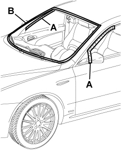

7035AA WINDSCREEN WIND NOISE LOCATION
- Path
- Test > 70 FITTINGS > 7035 BODY WINDOW GLASSES > 7035A WINDSCREEN > 7035AA WINDSCREEN WIND NOISE LOCATION
- Kind
- test / check procedure
- Applies to
- all engines; all production periods
- Interactive page
- https://sloeber94.github.io/elrnDB-fCrm/en/#/194004765
Applies to: all engines; all production periods
Tape the various areas illustrated in the diagram using bodywork gummed paper.

Carry out a road test letting the vehicle gradually reach the speeds where the noise starts: if the wind noise persists, check that the windscreen has been correctly taped and also check whether the source of the wind noise might be coming from the area of the sun roof.
Remove the gummed paper from area A and repeat the road test: if the wind noise persists, locate the wind noise in the area of the front doors
See Test 7005OA FRONT DOOR NOISE LOCALISATION
Remove the gummed paper from area B (window only) and check the condition of the window moulding trim (no wrinkles or creases). Replace the moulding if necessary, removing the window.
Op. 7035A18 WINDSCREEN GLASS - R.R INCLUDING CLEANING HOUSING